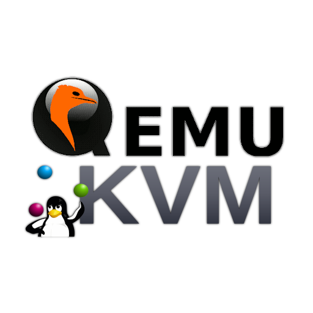
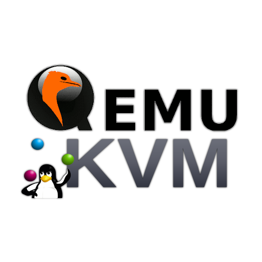

Installation de service réseau
Présentation globale
Ce projet avait pour objectif d'installer un système d'exploitation Linux (Debian 12) et de configurer des
outils réseau (Apache2) et de dévelopement (PostgreSQL, PHP, PhpPgAdmin) et de créer un guide en anglais.
Il s'agissait d'un projet individuel en autonomie, réalisé principalement à l'IUT lors de séances dédiées.
Ce projet est divisée en 3 parties :
- L'installation de Debian 12.
- L'installation des différent outils de réseau et de développement.
- La réalisation du guide en anglais.
Ressources qui alimentent ce projet
Les ressources utilisées pour ce projet sont :
- R2.04b [Communication bas niveau] / R2.05 [Introduction aux services réseaux]
Elles comprennent mes connaissances en réseau.
Mon rôle
Le travail étant individuel j'ai réalisé ce projet en autonomie et individuellement.
Mes compétences acquises
À la fin de ce projet, j'ai acquis plusieurs compétences :
- Maîtrise de l'installateur Debian 12.
- Installer un système d'exploitation Linux.
- Configurer un système d'exploitation pour l'adapter à des besoins spécifiques.
- Rédiger un rapport de notre travail en anglais.